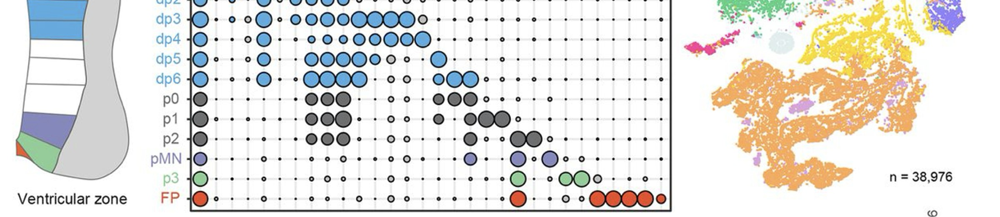

Resources
Data, code and reagents from our published work, free to use.
Code
Software from the lab, maintained on GitHub. Analysis code written for one particular paper is linked beside its dataset below.
VelvetVAE and VelvetSDE. Deep generative models that infer the dynamics of a developing system from time-resolved single-cell RNA-seq, treating differentiation as a neural stochastic differential equation. VelvetVAE gives each cell a direction and speed through gene expression space; VelvetSDE simulates whole distributions of trajectories.
Entropy Sorting Feature Selection. Information-theoretic feature selection and marker gene discovery for single-cell RNA-seq, which needs neither cell type labels nor a dimensionality reduction beforehand. SeuratESFS is an R wrapper that runs the same workflow directly on Seurat objects.
The R code behind the mouse spinal cord single-cell atlas, from cell population identification through to neurogenesis dynamics. Antler is the general-purpose package it is built on, for unbiased identification of transcriptomic states, lineage trees and pseudotime gene dynamics.
Detects individual nuclei in crowded immunofluorescence images, where conventional segmentation struggles. It works on two-dimensional embryo sections and single planes, and includes tools for estimating nuclei in three dimensions from confocal stacks of whole embryos, organoids and embryo models.
Sequencing data
All series are deposited in the NCBI Gene Expression Omnibus. Analysis code is linked where it is available.
Bulk RNA-seq of mouse and human stem cell derived spinal cord differentiation time courses, used to compare developmental tempo between the two species. The related series GSE140748 holds the day 3 to day 10 ventral spinal cord differentiation data in three replicates, later reused in Sagner et al. 2021.
Single-cell RNA-seq of human embryonic spinal cord. The data can be browsed in the neural tube single-cell viewer, and the analysis scripts are on GitHub.
SuperSeries combining CaTS-ATAC, chromatin accessibility measured after intracellular marker cell sorting, with RNA-seq across neural tube progenitor subtypes. This is the basis for the two cis-regulatory strategies and the FOXA2 pioneering result.
Single-cell RNA-seq of chick trunk, sampled at 4, 7, 10 and 13 somites, HH8 to HH11, mapping progenitor populations and their spatial organisation. Reused by Libby et al. 2025.
Single-cell RNA-seq of human micropattern cultures. Reused by Loo et al. 2026.
Single-cell RNA-seq of three-dimensional human notoroids, trunk organoids containing a notochord. Reused by Fontaine et al. for cross-species landscape validation.
SuperSeries, Deep dynamical modelling of developmental trajectories with temporal transcriptomics. sci-FATE2 time-resolved single-cell RNA-seq, combining 4sU metabolic labelling with combinatorial indexing, of mouse stem cell derived neural differentiation from day 3 to day 8 in four replicates. The SubSeries are GSE236378, GSE236508, GSE236512, GSE236517 and GSE236518. This is also the dataset behind the STAR Protocols paper, and it is reused by Cislo et al. 2025 and Fontaine et al.
SuperSeries covering the temporal chromatin accessibility programme across central nervous system progenitors, the associated RNA-seq, and the arrayed CRISPR mutation screen that identified Nr6a1.
Single-cell RNA-seq with guide RNA feature-barcode capture, from the multiplexed in ovo CRISPR screen in chick embryos. Twenty-five targets across 102 guides in the caudal lateral epiblast.
Processed barcode sequencing from the NeMECiS synthetic cis-regulatory element library, linking element composition to signal-dependent reporter output. A preprint, not yet peer reviewed.
Other depositions
Imaging volumes, code and processed data held outside GEO.
Serial block-face scanning electron microscopy volumes of trunk and notochord tissue, in four separate depositions.
Bulk RNA-seq differential expression tables and model benchmarking data accompanying the latent dynamical systems framework.
Code for image analysis and parameter estimation for the optogenetic morphogen work. The underlying imaging data are available on request rather than deposited.
Dynamic landscape analysis code, also available on GitHub.
Reagents
Plasmids from our published work are deposited with Addgene and can be ordered directly.
Reporter and knock-in lines are available on request. Please get in touch.
Protocols are being collected and will be added here. In the meantime the methods sections of the relevant papers carry the detail, and we are happy to answer questions.